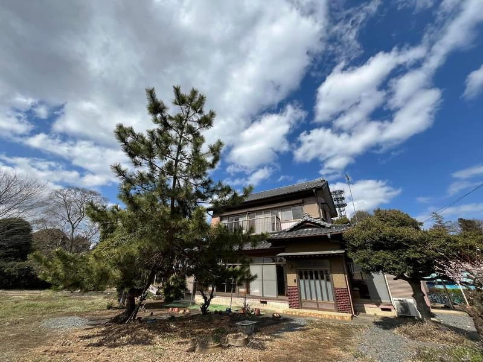

使う場所じゃない。関わる場所。
good meet, good place
オチアイは、茨城県古河市の古民家を使った私設公民館です。
コワーキングスペースでも、カフェでも、レンタルスペースでもありません。
目的のある人も、ない人も、だれでも来ていい場所です。
勉強しに来る日も、だれかと話したい日も、ただ縁側でぼーっとしたい日も。
そのどれもが、ここでは「正しい使い方」です。
古民家ならではの縁側と畳の空間で、来た人どうしがゆるやかに関わり合っていく。
そういう場所にしたいと思っています。
「おかげさまで」という名前の通り、来てくれる人、関わってくれる人、応援してくれる人のおかげで成り立っています。
古河市久能925番地の古民家で、若者と地域の人々が出会い、なにかが生まれていく場をつくっています。
サービスを提供する場ではなく、人と人が出会い、関わり合える場をつくること。ここで生まれる関係に意味があると思っています。
目的がなくてもいい。役に立たなくてもいい。だれかの「ただいられる場所」であることを、大事にしています。
使用料をとらず、共感と応援で続けていく形を試みています。「おかげさまで」の名前はその気持ちそのものです。
ただ来てもいい場所にしたいこと。
応援で支え合う形を選んでいること。
なぜ、利用料をとらないのか。
なぜ、来ることと応援することを分けているのか。
なぜ、オチアイという場所があるのか。
よかったら、少しだけのぞいてみてください。
「来るだけ」から「一緒につくる」まで、どこから始めてもいいし、どこで止まってもいい。
ただ来る
予約して来るだけでいい。縁側でお茶を飲んで、ぼーっとしていてもいい。それだけで十分です。
関わる
来ている人と話す。イベントに参加する。名前を覚えてもらう。少しずつ、ここの一部になっていく。
やってみる
この場所を使って何かをやってみる。企画を相談する。ここを会場にイベントを開く。アイデアがあれば話しかけてください。
支える
オチアイが続いてほしいと思ったら、応援という形で関わる。カンパでも、SNSでのシェアでも、知人を連れてきてくれるのでも。
一緒につくる
運営に加わる。住み込み管理人として住む。この場所そのものの一部になる。そういう関わり方も、ひらいています。
オチアイは、利用料をいただいていません。
その代わり、ここを続けてほしいと思ってくれた方の
応援として、気持ちの分だけカンパをいただいています。
来ることと、応援することは、別のことです。
応援しなくても、来てください。
それだけで、オチアイはオチアイでいられます。
でも、もしここに来て「いい場所だな」と思ってくれたなら、ぜひ。
応援したい気持ちがあれば、施設内にカンパ箱があります。
100円でも、500円でも。
カンパは、次に来る人のための場所を守ることに使われます。
こんなことが、ふつうに起きている場所です。
午後2時。縁側でコーヒーを飲みながら、隣に座った人と気づいたら1時間話していた。名前も知らないまま、でもなんか悪くなかった。
特に予定はなかった。ただ、ここにいると落ち着く気がして、また来てしまった。それでいいんだと思うようになった。
「何かやってみたい」と話したら、気づいたら日程が決まっていた。背中を押されたというより、一緒に考えてもらった感じ。
予約は必要ですか？
基本的にはお願いしています。予約フォームから2〜3分でできます。「行ってみます」くらいの気持ちで入れてもらえれば大丈夫です。
一人で来ても大丈夫ですか？
大丈夫です。むしろ一人で来る人がほとんどです。知り合いがいなくても、来ているうちに自然とつながっていくことが多いです。
利用料はかかりますか？
いただいていません。施設内にカンパ箱を置いていますが、入れるかどうかはあなた次第です。来ることに条件はありません。
応援しないといけませんか？
まったく、いりません。「続いてほしいな」と思ったときに、気持ちの分だけしてもらえれば十分です。来てくれるだけで、ありがたいです。
イベントや活動に参加しないといけませんか？
しなくていいです。ただ来て、お茶を飲んで、帰る。それで十分です。参加したくなったときに、してもらえれば。
オチアイの日常は、Instagramで発信しています。
近況・イベント・日常のひとコマをお届けしています。
目的があってもなくても。知り合いがいなくても。はじめてでも。
オチアイはいつでも、ひらいています。